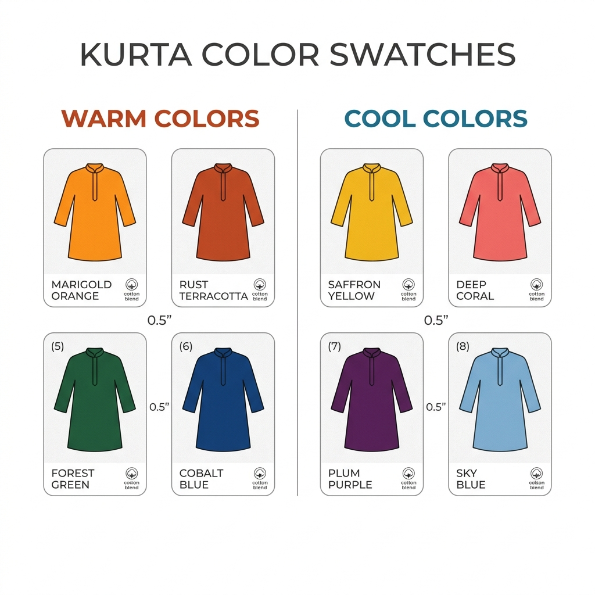

Last updated: July 14, 2026
Which Kurta Colours Suit Your Skin Tone? A Practical Guide
Quick answer: Warm undertones look best in mustard, rust, olive, and warm maroon kurtas; cool undertones in teal, true blue, magenta, and wine; neutral undertones can wear most shades, with dusty and muted tones being an especially safe everyday choice.

Everyday vs Festive Kurta Colours
Everyday kurtas tend to work best in slightly muted versions of your best colours — easier to mix into a rotation and less likely to clash with whatever bottoms you reach for. Festive kurtas can go bolder and more saturated, since they're usually a standalone outfit rather than part of a daily rotation.
Everyday (muted): dusty rose, sage, soft mustard, stone
Festive (saturated): emerald, magenta, deep mustard, wine
How Prints Change the Rules Slightly
For printed kurtas, the dominant background colour matters more than the accent colours in the print — treat the base fabric colour as you would a solid kurta, and let the print's smaller accent colours be more flexible.
Building a Mix-and-Match Kurta Wardrobe
Pair kurtas in your best colours with 2-3 neutral bottoms (white, beige, or your best neutral) so every kurta has multiple ready outfit combinations rather than needing a dedicated bottom.
FAQ
Does fabric (cotton vs silk) change how a colour looks?
Slightly — silk reflects more light and can make a colour look brighter or richer than the same shade in cotton, which tends to look more matte and muted.
What's the safest kurta colour for daily office wear?
A muted version of your best neutral-adjacent colour — dusty rose or sage for cool/neutral undertones, warm stone or soft mustard for warm undertones.
How should I match my dupatta colour to my kurta?
Either match your dupatta to your kurta's undertone family for a cohesive look, or use a contrasting colour from the opposite undertone group sparingly as a deliberate accent — avoid picking a dupatta colour that fights your kurta's undertone by accident.
Find your exact best colours in under a minute — [scan with Colourity →](https://colourity.com)